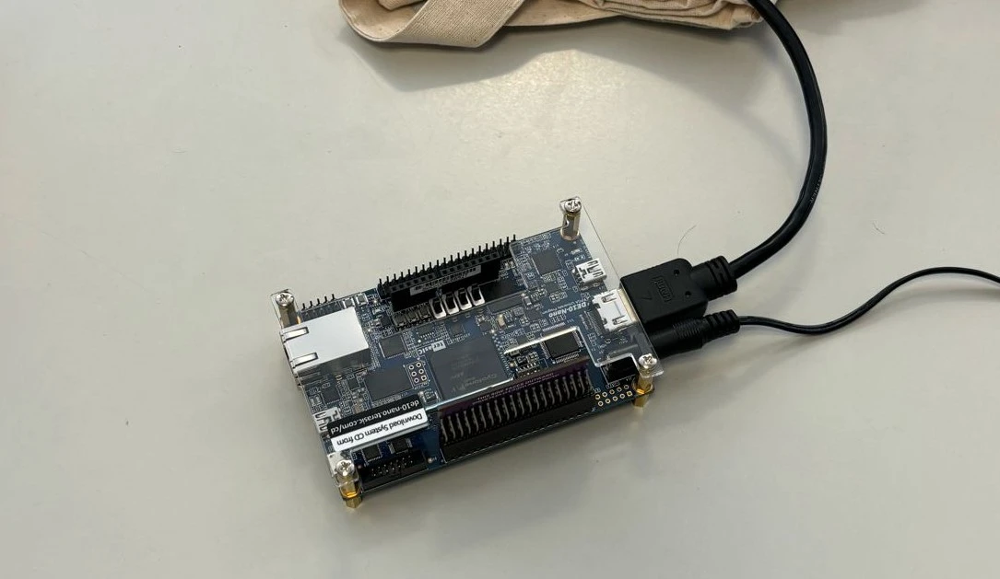
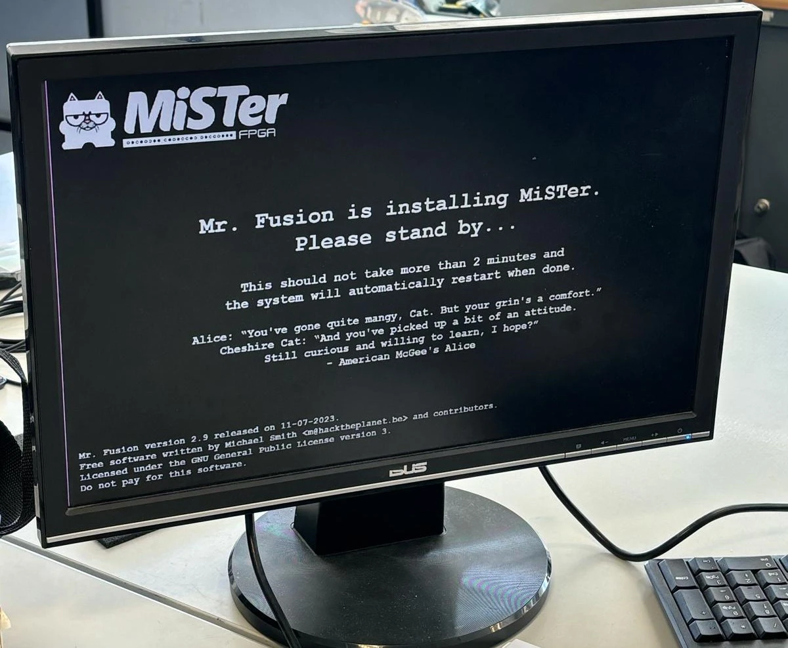
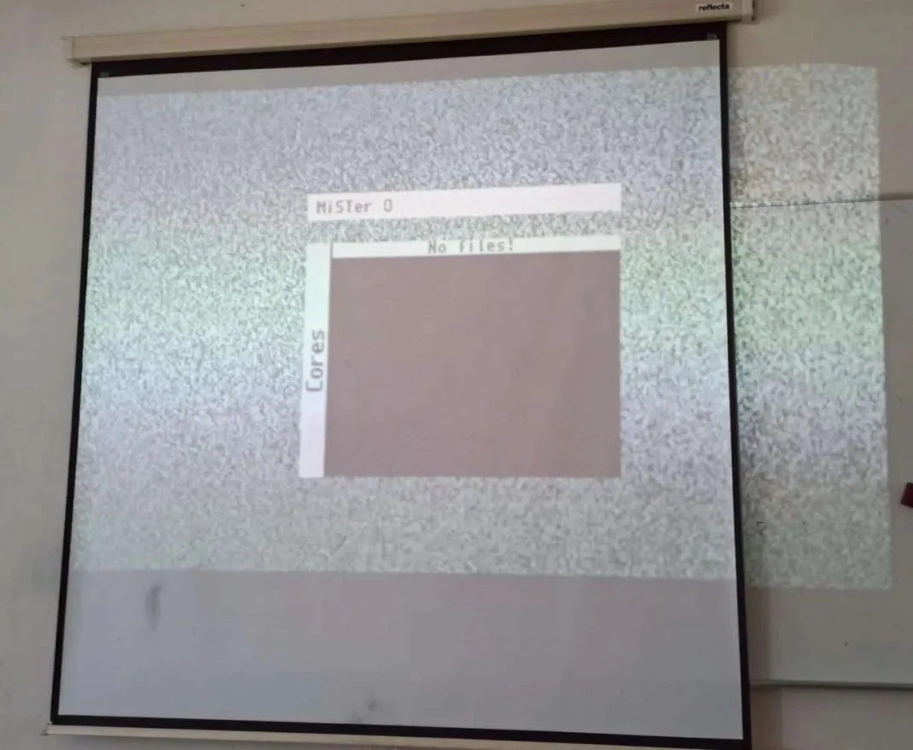

Changelog
First hands-on! (27/02/2024):
We started by following the
tutorial on the MiSTer FPGA documentation website.
So we flashed the micro SD card that came with the FPGA and booted up the FPGA with it:

It went into setup mode:

After that we waited some time as it said in the installation image (as seen above), but all we would get was a black screen.
We tried a bunch of things including flashing the micro SD card again, changing monitors, etc,... But nothing seemed to work.
We saw an example config file that seemed to have an option to allow VGA output. As all the monitors we were using at the time had VGA only input
we tried moving to a different room that had an HDMI input. We then found a room that had a projector with HDMI input so we went with that.
We tried doing the setup again and soon enough we had a video output!

After that we connected the FPGA through ethernet to run an updater script to download all the cores
We then loaded some games into a games folder on the micro SD card and played a bit!
Requested material on our hands! (26/02/2024):
The material we requested previously was delivered to us. We will start working tomorrow on it!
Project Reunion [No. 1] (21/02/2024):
The team members all attended the meeting with the project coordinator and monitor at around 17 o'clock.
We talked about the planning and roadmap.
We also were informed the material we ordered already arrived! Unfortunately we couldn't get it at the time
so Francisco will give it to Prof. Marcelino so he can deliver it to us on Monday.
Update on requested material [2] (23/01/2024):
We were told the material was already requested on the IST shopping platform. After that we just need to wait for Prof. Marcelino dos Santos to give the last approval and we should get the material soon.
Update on requested material [1] (09/01/2024):
We asked Dr Marli Gomes about the material list and she said she was waiting on supplier estimate for the material.
Sent temporary material list (22/12/2023):
The temporary material list was sent to Dr Marli Gomes from the Scientific Area of Electronics
so hopefuly we can start working as soon as the 2nd semester starts.
The list was the following:
- FPGA (DE10-Nano from Terasic);
- SDRAM module;
- Joysticks.
Reunion with scientific advisor for material list and project proposal (19/12/2023):
The team had a meeting with the project's scientific advisor Prof. Fernando Gonçalves about the material list and the project proposal.
We settled that, for now, we would order the FPGA (DE10-Nano from Terasic) with the SDRAM module and some joysticks.
Other things like the battery or the screen would come later.
We also wanted to get some buttons already but we were told there were already some within Técnico so there wouldn't be a need.
As for the project proposal, Prof. Fernando Gonçalves agreed on everything we proposed
(you could see some of the propositions on the "planning" section of the website).
We will soon send the temporary material list to be ordered.